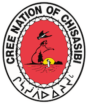
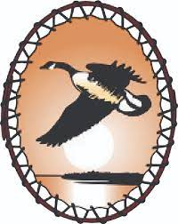
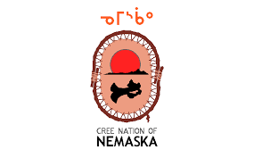
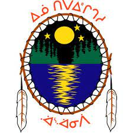
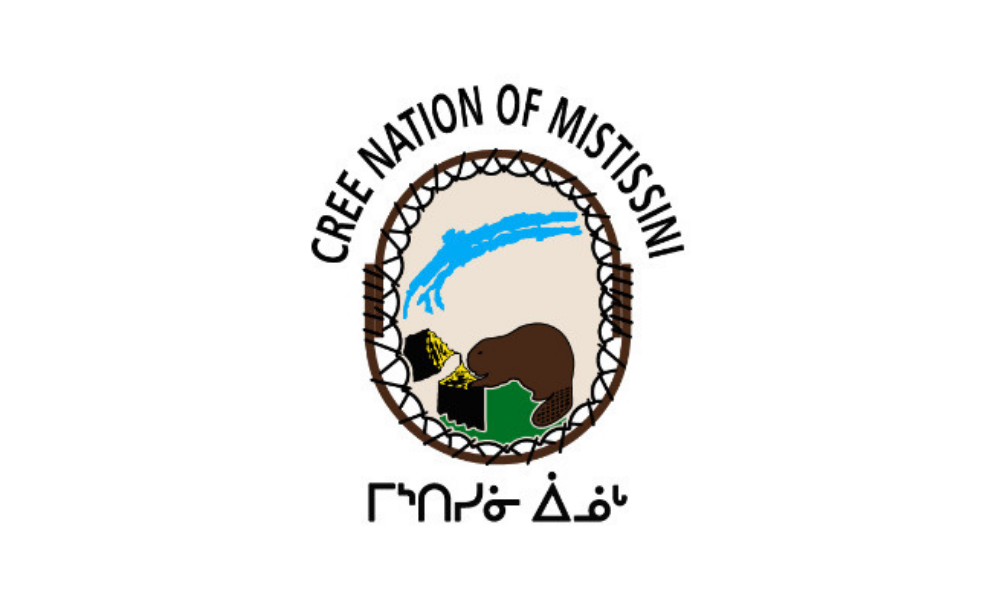

Map of Cree Settlements

Cree Nation of Whapmagoostui
Population: 1021 (2021)
Size: 202.49 sqare kilometers (78.18 sqare miles);
Whapmagoostui (Cree: ᐙᐱᒫᑯᔥᑐᐃ/Wâpimâkuštui, "place of the beluga") is the northernmost community located at the mouth of the Great Whale River on the coast of Hudson Bay in Nunavik.
The community is accessible only by air (Kuujjuarapik Airport) and, in late summer, by boat.
The land is cohabited between the Inuit and Cree at the mouth of the Great Whale River, with the Inuit close to the coast and the Cree more in the interior.
The Chief of Whapmagoostui is Louisa Wynne.
Go to map (top section)
Cree Nation of Chisasibi
Population: 5264 (2021)
Size: 776 square kilometres (300 square miles)

Chisasibi(Cree: ᒋᓵᓰᐲ, meaning "Great/Big River") sits on the south shore of the La Grande River on the Coast of James Bay and is the second northernmost Cree community in Eeyou Istchee.
The nation also has a terre réservée crie or Cree reserved land of the same name.
The Chief of Chisasibi is Daisy House.
Go to map (top section)
Cree Nation of Eastmain
Population: 917 (2021)
Size: 147 square kilometers (56.76 square miles)
Eastmain (Cree: ᐙᐸᓅᑖᐤ/Wâpanûtâw meaning "Lands east of James Bay") is located on the east coast of James Bay and on the shore of the Eastmain River.
Its members primarily live in the Terres réservées aux Cris or Cree reserved land (Indian reserve) of Eastmain, Quebec.
Eastmain is named after the Hudson Bay trading post that was originally located on the north shore of the Eastmain River.
The Chief of Eastmain is Kenneth Cheezo. (2021)
Go to map (top section)
Cree Nation of Waskaganish
Population: 2039 (2019)
Size: 502 square kilometers (193.82 square miles)

Waskaganish (Cree: ᐙᔅᑳᐦᐄᑲᓂᔥ/Wâskâhîkaniš, meaning "Little House") is located at the mouth of the Rupert River on the south-east shore of James Bay.
Formerly called Fort Rupert, the location is one of three original Hudson's Bay Company posts on James Bay, the other two being Fort Albany on the west shore, and Moose Factory on the south.
The Chief of Waskaganish is Darlene Cheechoo.
Go to map(top section)
Cree Nation of Nemaska
Population: 851 (2021)
Size: 54.7 square kilometers (21.12 square miles)

Nemaska (Cree: ᓀᒥᔅᑳᐤ/Nemiskâw, meaning “where there is plentiful of fish”) is a Cree village municipality in the territory of Eeyou Istchee in northern Quebec
Nemaska is one of the inland communities located on the shores of Lake Champion and is where the head office of the Grand Council of the Crees (Eeyou Istchee) and the Cree Nation Government is located.
The Chief of Nemaska is Clarence Jolly Sr.
Go to map(top section)
Cree Nation of Waswanipi
Population: 459 (2021)
Size: 385.83 square kilometers (148.97 square miles)

Waswanipi (Cree: ᐙᔅᐙᓂᐲ/Wâswânipî, meaning "Light on the Water") is a Cree community located long Route 113 and near the confluence of the Chibougamau and Waswanipi Rivers.
The original location of the village was on an island in Lake Waswanipi. It was the site of a Hudson's Bay Company trading post until 1965 when the post was closed.
The Chief of Waswanipi is Marcel Happyjack.
Go to map(top section)
Cree Nation of Ouje-Bougoumou
Population: 929 (2021)
Size: 60 square kilometres (37 square mi)
Waswanipi (Cree: ᐆᒉᐳᑯᒨ / Ûcêpukumû, meaning "the Place Where People Gather") is one of the Cree community one of the inland communities located along the shore of Lake Opemiska.
Being one of the newest communities, it was designed by community members with the assistance of professional planners.
The architectural theme was developed together with Douglas Cardinal and was built in the early 1990's.
The Chief of Oujé-Bougoumou is Curtis Bosum.
Go to map(top section)
Cree Nation of Mistissini
Population: 929 (2021)
Size: 776 square kilometres (300 square mi)

Mistissini (Cree: ᒥᔅᑎᓯᓃ, meaning Big Rock) is a Cree First Nation of Canada. It is headquartered at the Cree village of Mistissini and also has a terre réservée crie of the same name, both in Northern Quebec.
It is where the main offices for the Cree School Board, the Cree Human Resources Development Department, and Eeyou Istchee’s regional radio station, the James Bay Cree Communications Society are located.
The Chief of Oujé-Bougoumou is Thomas Neeposh.
Go to map(top section)